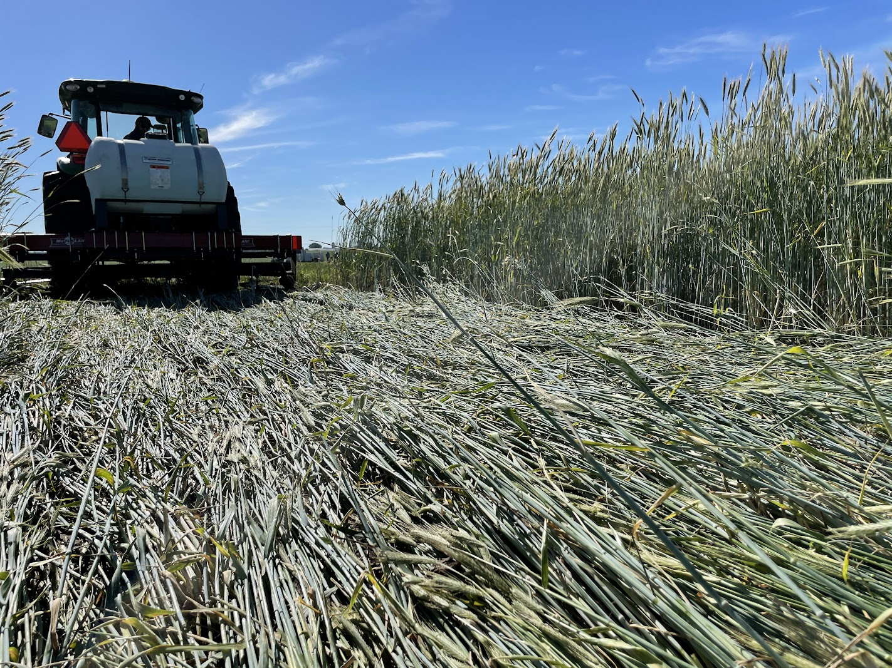
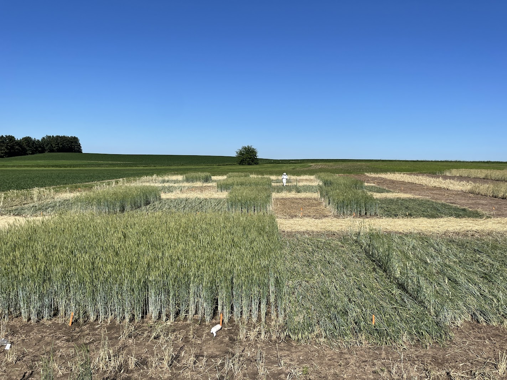
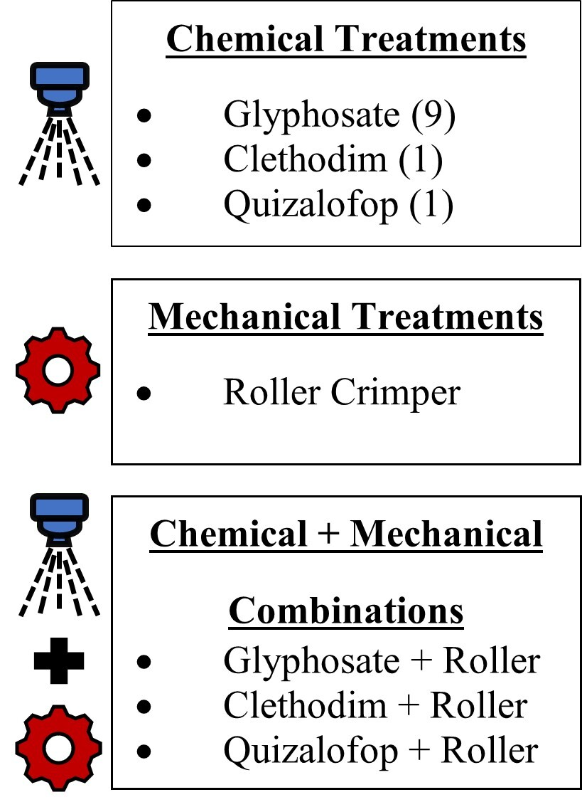
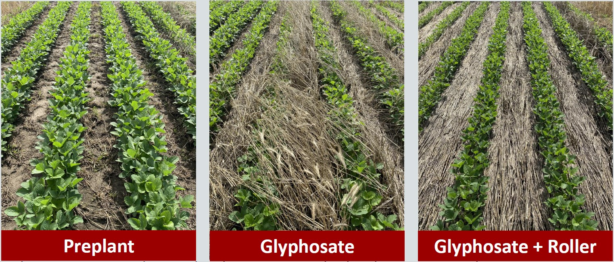

If you are a soybean grower, you probably know that weed management programs utilizing high-biomass cereal rye (Secale cereale L.) cover crop in Wisconsin soybean systems and beyond are increasing in popularity. Multiple benefits, such as reduced soil erosion, increased nutrient and water retention, and weed suppression have brought this system into the spotlight. Many growers have already implemented this strategy, with many more pondering it. Despite all the benefits a cereal rye cover crop provides, there are still a few management "wrinkles" to iron out. The one "wrinkle" we will discuss in this article is cereal rye cover crop termination in a planting green system into high cereal rye biomass (Figure 1). Much of this system's success depends on both effectively terminating the cereal rye cover crop and mitigating the impacts this practice may have on soybean establishment and yield.

In the past, glyphosate (Group 9) application 10-14 days ahead of soybean planting was the recommended strategy for killing off a cereal rye cover crop. Many growers are now asking what other termination methods, besides glyphosate alone, provide comparable termination results when planting soybean green into high cereal rye cover crop biomass. Thus, we conducted an experiment to investigate chemical, mechanical, or combinations of the two strategies on their efficacy of both cereal rye cover crop termination and soybean yield (Figure 2).

The field experiment was established in 2021 and replicated in 2022 at the UW-Madison Arlington Agricultural Research Station in southern Wisconsin (Figure 2). The control treatment was fall established cereal rye cover crop terminated with glyphosate (Roundup PowerMAX at 32 fl oz/acre + AMS at 2.5 lbs/acre) applied >2 weeks ahead of planting soybeans in the spring. Treatments involving mechanical cover crop termination were performed using a McFarlane roller crimper (Figure 1). The remaining treatments focused on evaluating glyphosate (Roundup PowerMAX at 32 fl oz/acre + AMS at 2.5 lbs/acre) and two ACCase-inhibitors (Group 1), clethodim (Select Max at 16 fl oz/acre + AMS at 2.5 lbs/acre + COC at 1% v/v) and quizalofop (Assure II at 12 fl oz/acre + AMS at 2.5 lbs/acre + COC at 1% v/v), respectively, with and without a roller crimper (roller crimper first followed by the herbicide application; Figure 2). Besides the early cover crop termination control treatment, all termination treatments and soybean planting occurred at the full anthesis stage of cereal rye since this is the recommended stage for using a roller crimper.

Cereal rye biomass in the early termination control treatment and at soybean planting time was 6,075 and 8,050 lbs of dry matter per acre in 2021 and 5,090 and 14,120 lbs of dry matter per acre in 2022, respectively. Now we know you might wonder about the drastic difference in biomass accumulation between the two years. In 2021, we were able to plant exactly two weeks after our early termination control was applied, as intended. It was a bit of a different story in 2022 since rain kept us from deploying the other treatments and planting until four weeks after we terminated the control plots. The good news is that despite the differences in biomass caused by the delayed termination and planting due to environmental conditions in 2022, cereal rye termination and soybean yield results surprisingly held the same trend when comparing the two years of data.
As far as results go, glyphosate-based treatments were the most effective on cereal rye termination (>98%) when compared to crimping alone (<72%), ACCase-inhibitors alone (<57%), and a combination of crimping and ACCase-inhibitors (<81%) at 21 days after soybean planting (Figure 4). A 16 and 27% reduction in end-of-season soybean stand compared to the other treatments was detected for quizalofop and clethodim-based treatments (ACCase-inhibitors alone), respectively.

Regarding soybean yield, treatments that were terminated with glyphosate had the highest yield, regardless of application time and adoption of roller crimper. The roller-crimper and glyphosate treatment combination had a 3.5 bu/ac higher yield when compared to glyphosate alone in this study (Figure 4). With today's bean prices (~$15/bushel as of March 10, 2023) that is ~$50 more in return per acre. Based on these numbers, glyphosate has successfully defended its reign as the best chemical option as well as the chemical/mechanical combination option for cereal rye termination. If you are still curious about the ACCase inhibitors treatments, they did not have promising results. Yet, both clethodim and quizalofop treatments in combination with the roller-crimper yielded more than the roller-crimper only and ACCase-inhibitors only but their application occurred too late (full anthesis stage of cereal rye) for these herbicides to be effective.
Here are the main takeaways we would like you to consider:
Terminations containing glyphosate provided the highest cereal rye control minimizing the impact on soybean yield in a planting green system into high cereal rye biomass. Glyphosate has been and still is the best herbicide for killing off a cereal rye cover crop.
The chemical/mechanical combination with glyphosate was the highest-yielding treatment in this study out of all the high biomass treatments outperforming glyphosate alone by 3.5 bushels per acre. The control treatment (termination with glyphosate >2 weeks ahead of soybean planting) had the overall highest yield in this study.
What about weed suppression? Check out these other relevant cover crop blog posts by fellow WiscWeeds graduate students Jose Nunes and Guilherme Chudzik:
Thanks for reading and we hope you were able to take something valuable away to apply to your operations’ cereal rye cover crop soybean system!
Curious how this study looked at the time of soybean harvest? Check this Twitter video.
The research reported herein is being led Jacob Felsman (WiscWeeds MS student). Click here to see Felsman' poster presented during the 2022 North Central Weed Science Society Meetings (December 2022) in St. Louis, MO. Felsman wont first place presentation with this poster (congrats Jacob!).
Additional resources:
This article was written by Jacob Felsman (MS Student) with the support of Nick Arneson (Outreach Program Manager), Ryan DeWerff (Research Specialist) and Rodrigo Werle (Assistant Professor). All authors are affiliated with UW-Madison.